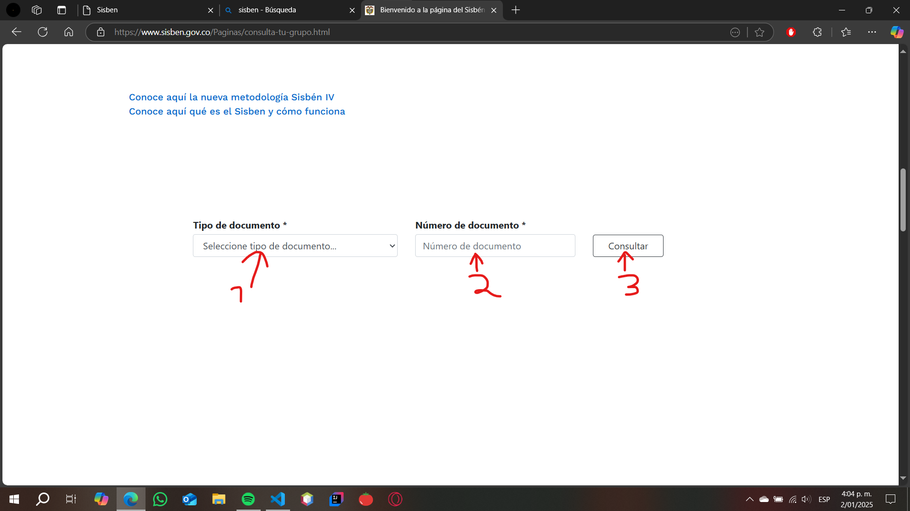
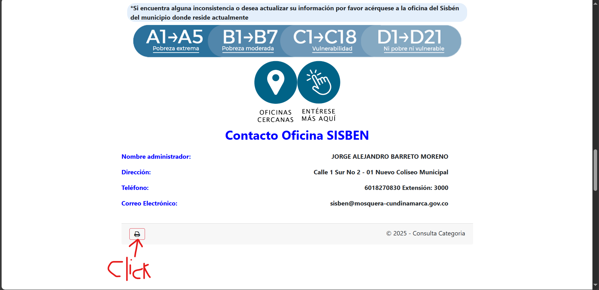
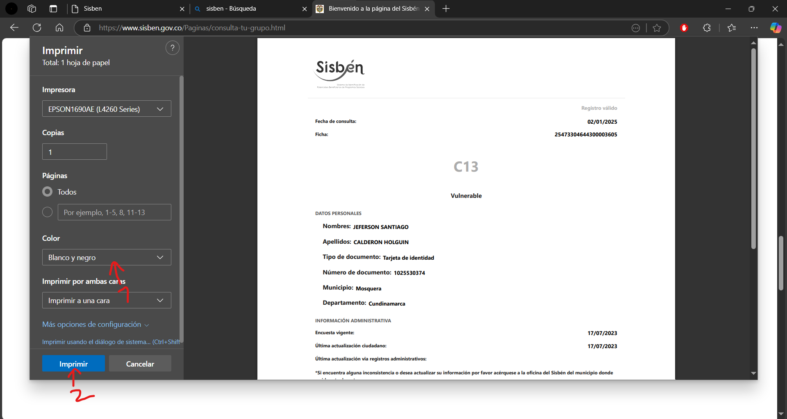

Instrucciones
Paso 1.
Paso 2.
Baja en la página hasta que encuentres esto:
Selecciona el tipo de documento del cliente (número 1)
Ingresa el número de identificación del cliente (número 2)
Por último, haz clic en "Consultar" (número 3)

Paso 3.
Baja hasta encontrar este logo y haz clic en el botón señalado

Paso 4.
Aparece esto y selecciona si es a color o blanco y negro (número 1)
Por último, haz clic en imprimir (número 2)
